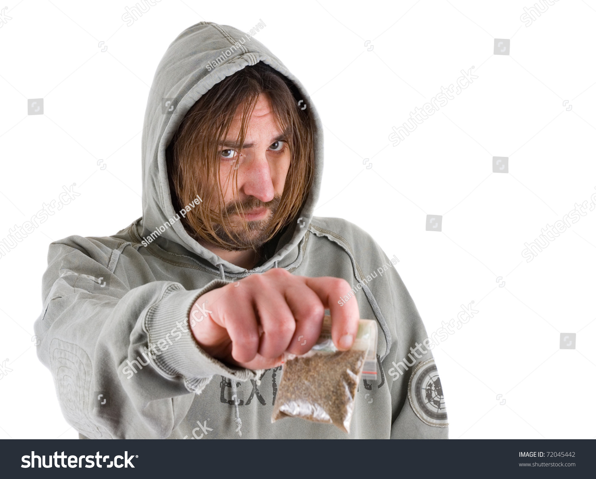

Lounští dealeři
Lounský dealer je označení pro osobu, která v Těch uličkách směňuje českou korunu na Lounský šilink. Poznáte je tak že budou mít na hlavě kapucu a budou stát někde sami. Dejte si ale pozor na kurz za jaký vám šilink nabýzejí, může být zastaralý a vy tak přijdete o své peníze.
